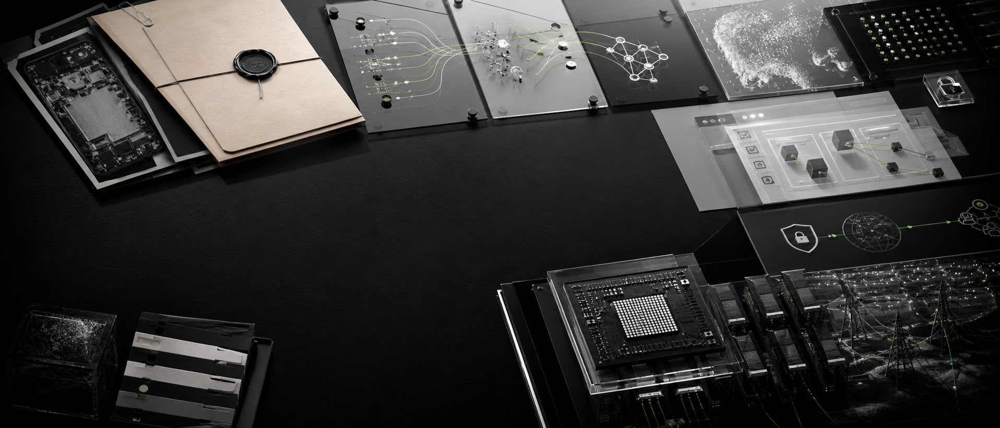
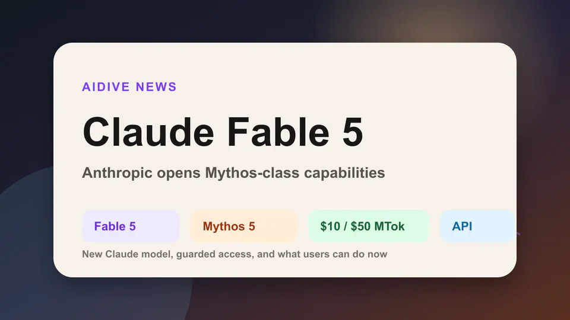
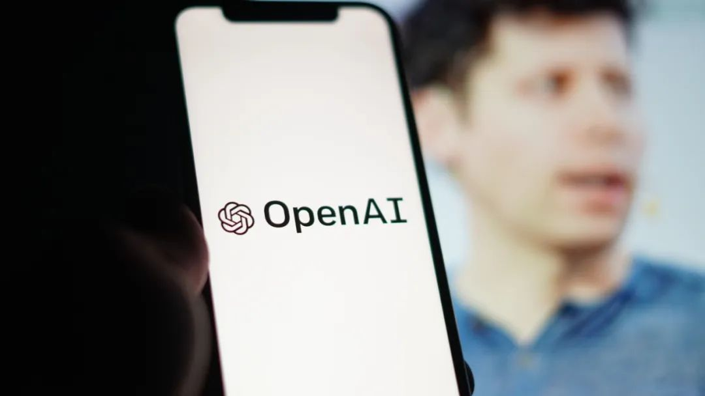
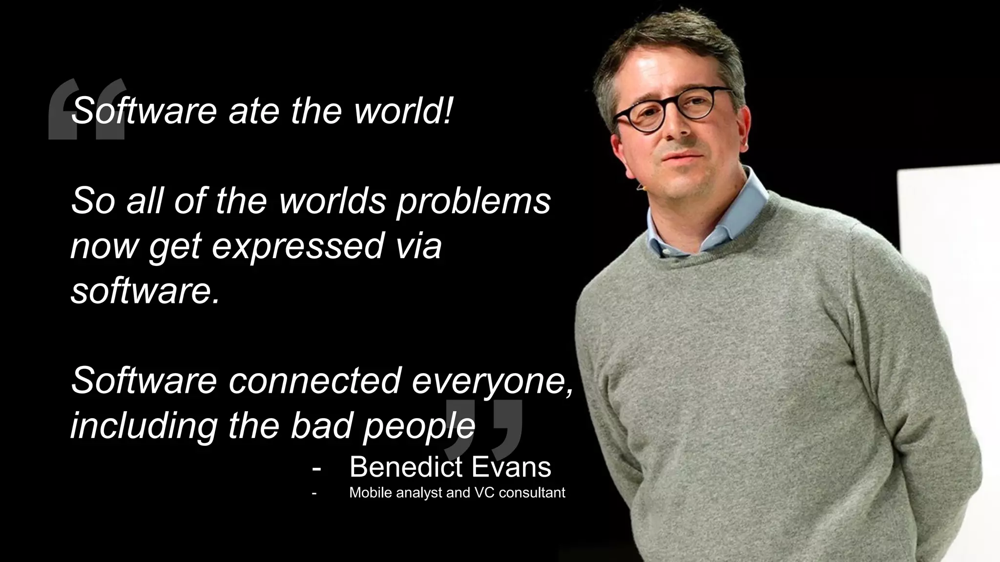
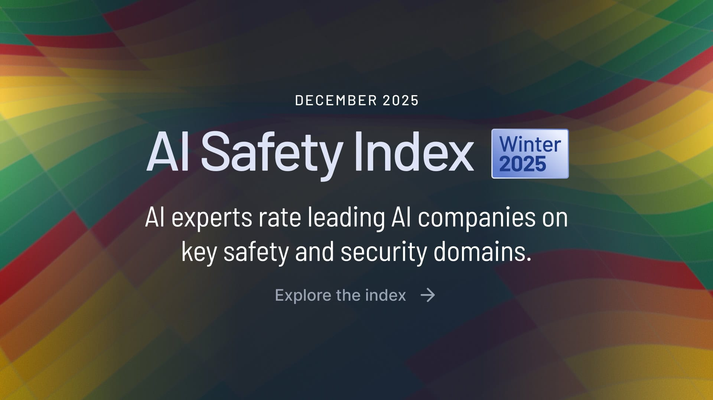
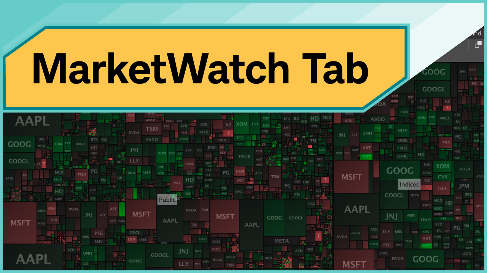
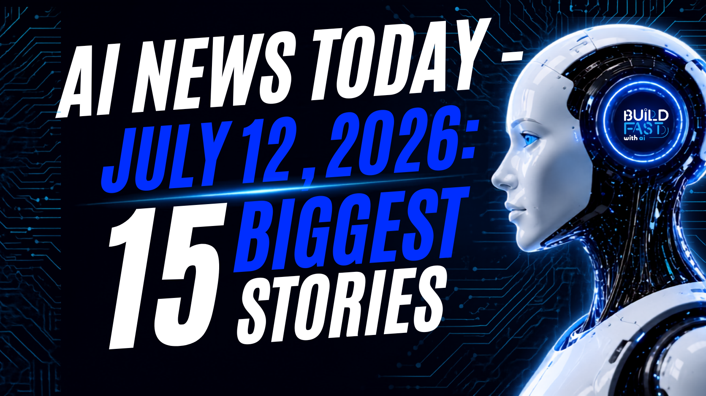
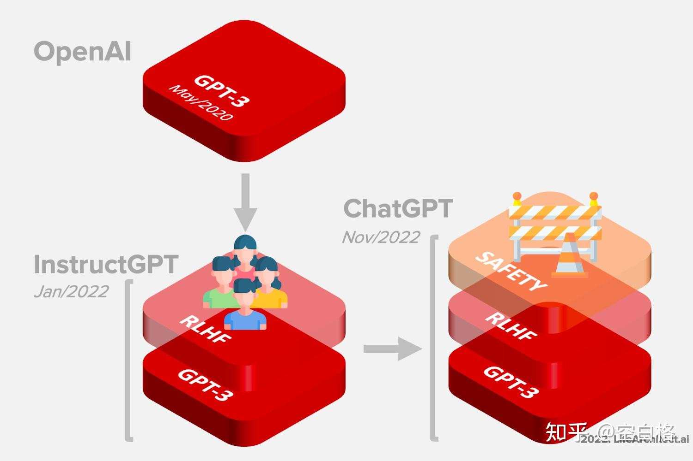

Janet 快车箱
AI Daily Briefing
2026-07-13
VOL 286

读者，早。
对中国创作者和创业团队来说，今天最该盯的不是“哪个模型最会说”，而是你的产品会不会踩进同样的坑。做硬件要管住员工流动和设计资产，做图像要处理肖像授权，做 Agent 要证明它没有偷归因、乱改流程，做代码工具要减少维护者的返工负担。
接下来 2-4 周要盯三条线：Apple 诉讼会不会拖慢 OpenAI 的设备路线；Anthropic 会不会把 Fable 5 的临时额度变成稳定套餐；Meta、Phia 和开源社区的反弹会不会逼平台把 AI 生成、浏览器扩展和自动化提交写进更硬的产品规则。

Techmeme 当日讨论流显示，Claude 官方账号称 Fable 5 可继续占用用户每周用量上限的一半，之后可使用 usage credits 或切回其他模型。围绕 Fable 5 是否应保留在订阅内，开发者和研究者持续质疑 Anthropic 的容量与定价沟通。

Bloomberg 在 Techmeme 当日流中报道，OpenAI、Meta 与 SpaceXAI 过去一周的新模型都强调 cost efficiency，企业客户越来越细算 AI spending，可能对 Anthropic 形成价格压力。相关讨论还提到 Palo Alto Networks CEO 认为 AI token 成本需要下降最高 90%。

OpenAI 发布 GPT-Live，称这是新一代语音模型，正在为 ChatGPT Voice 提供更自然的实时对话体验。Business Insider 的 72 小时 AI 发布汇总也把 GPT-Live 与 GPT-5.6、ChatGPT Work、Meta Muse Spark 1.1 放在同一轮产品节奏里。

Anthropic 的 Claude Sonnet 5 页面显示，该模型面向 Free、Pro、Max、Team、Enterprise 与 Claude Code 开放，并在 8 月 31 日前提供每百万输入 token 2 美元、输出 token 10 美元的 introductory pricing，之后标准价格为 3 美元和 15 美元。
Financial Times 报道称，AI coding tools 正在让开源项目收到更多低质量贡献，研究者把这种现象称为 AI slop 的 tragedy of the commons：个人提交效率提高，但审核、维护和社区成本被外部化给项目维护者。
Business Insider 当日文章讨论 Anthropic、OpenAI 和 Google 等 AI 公司面临的 distillation 与 scraping 争议：AI 公司长期主张抓取互联网内容属于 fair use，但当竞争者利用模型输出训练新模型时，它们又开始强调许可、控制和技术护城河。

Benedict Evans 在当日讨论中写道，当前 AI 市场处在 token supply crunch，但长期看 frontier models 可能更像 commodity infrastructure，价值会转移到基于模型构建的产品层。Techmeme 汇总了相关 LinkedIn、Bluesky 与 Threads 讨论。

Axios 报道，Future of Life Institute 的 AI Safety Index 指出大型 AI 公司在能力增长时削弱了部分安全承诺。Anthropic 排名第一但整体只有 C+，OpenAI 和 Google DeepMind 得到 C，existential safety 是全行业最低分项。
Bloomberg 与 Techmeme 当日流报道，Phoebe Gates 共同创办的购物应用 Phia 被测试发现会在后台打开标签页、替换其他推荐方的 affiliate codes，并为自己没有实际影响的交易认领销售贡献。多名技术和电商人士指出，这触碰了 affiliate network 的 stand-down 规则。

MarketWatch 报道，Meta 股价因 agentic AI coding、Meta Model API、Muse Spark 1.1 和自研 Iris 芯片进展反弹。报道还提到 Meta 的 Prometheus 数据中心已投入运行，投资人开始把 AI API、芯片和数据中心看成广告之外的新收入线。

BuildFastWithAI 的 7 月 12 日 AI 新闻汇总称，OpenAI 正准备与 Goldman Sachs 和 Morgan Stanley 推进 confidential IPO filing，最快可能在 9 月亮相，私募估值接近 7300 亿美元；文章同时把 Apple 诉讼和 Anthropic 收入领先列为关键压力。

Business Insider 的 72 小时 AI 发布汇总把 ChatGPT Work 与 GPT-5.6、GPT-Live 和 Meta Muse Spark 1.1 放在同一波更新中，称 OpenAI 正把模型能力接入工作场景与应用集成。OpenAI 的 GPT-5.6 页面也展示了 ChatGPT Work 中的交互式解释、前端生成和复杂工作流能力。